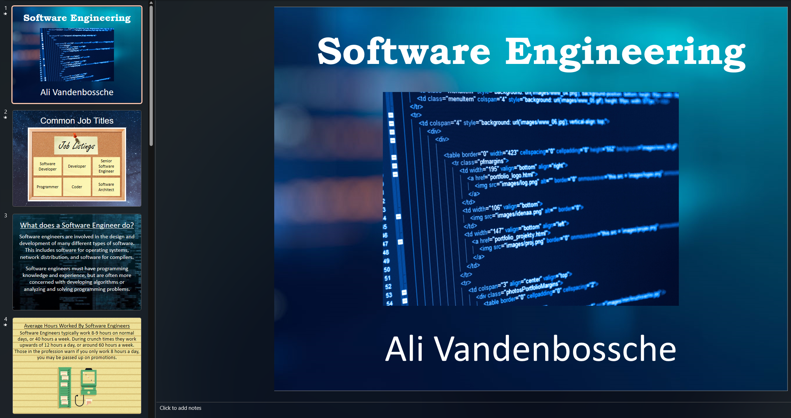
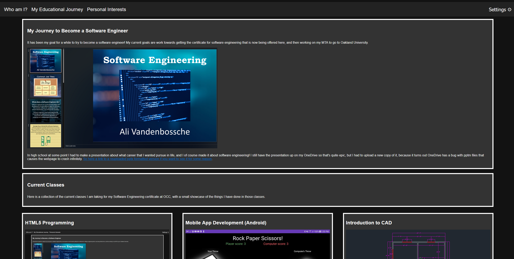
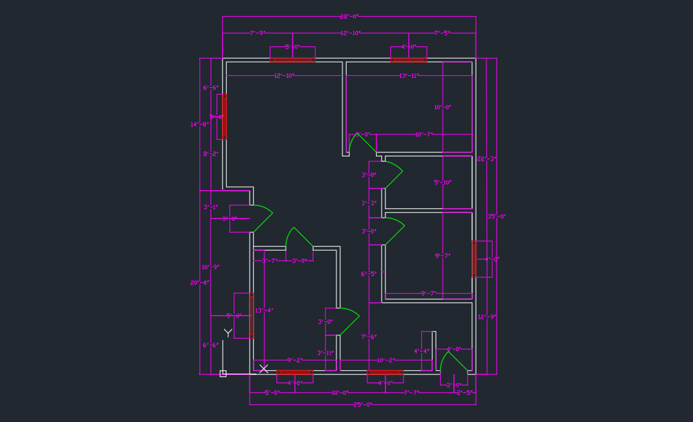
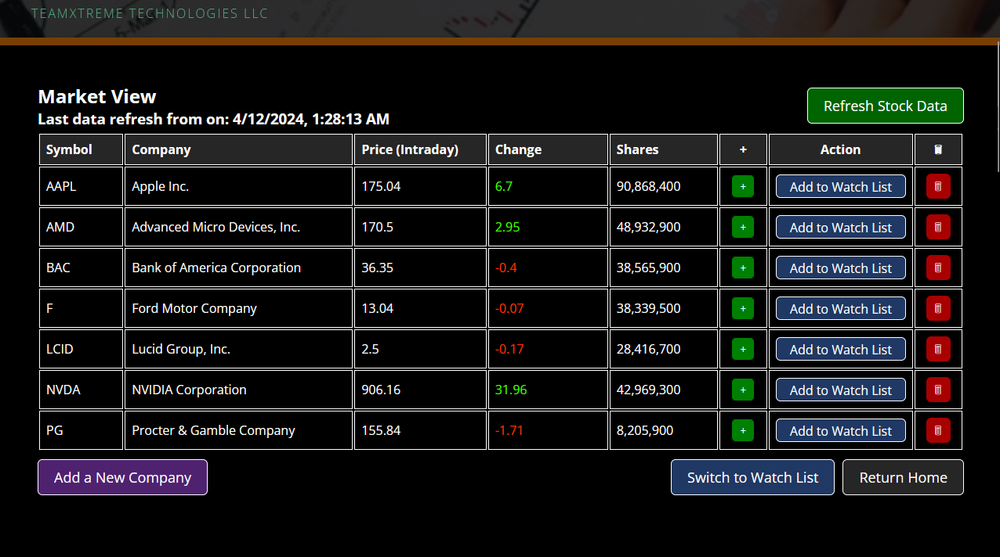
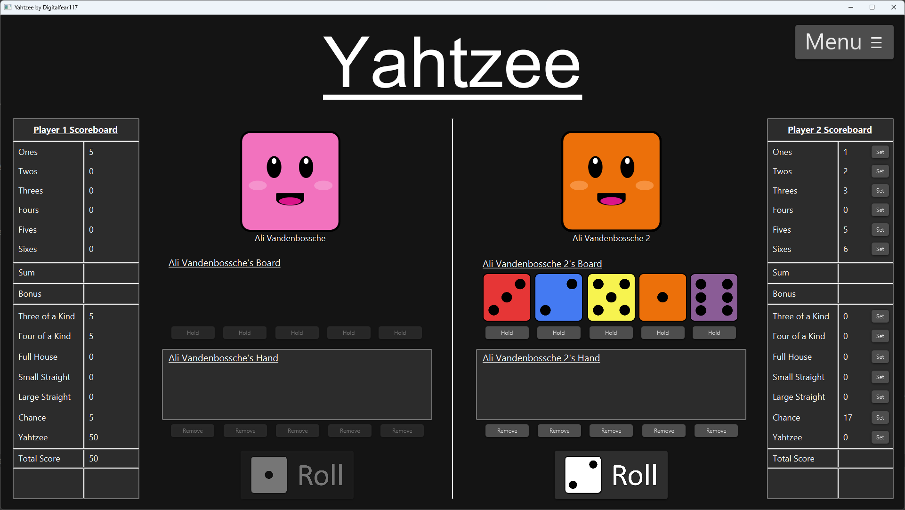
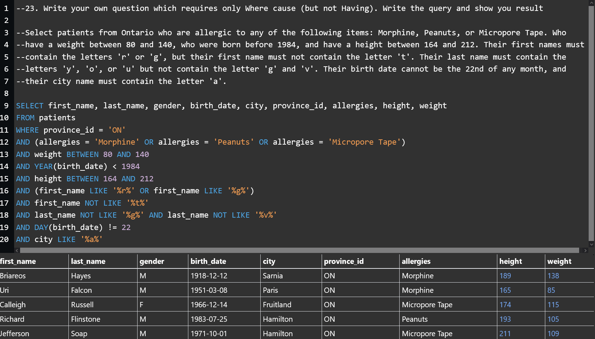
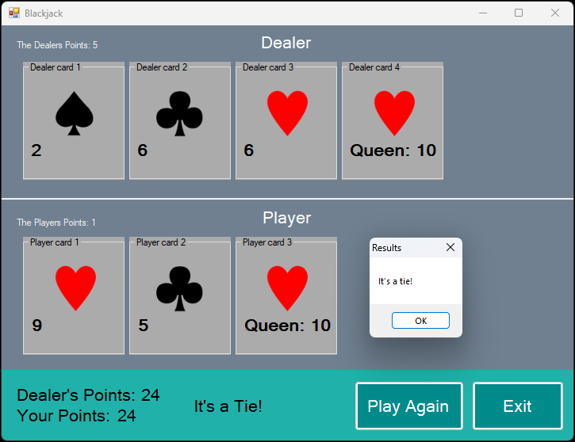
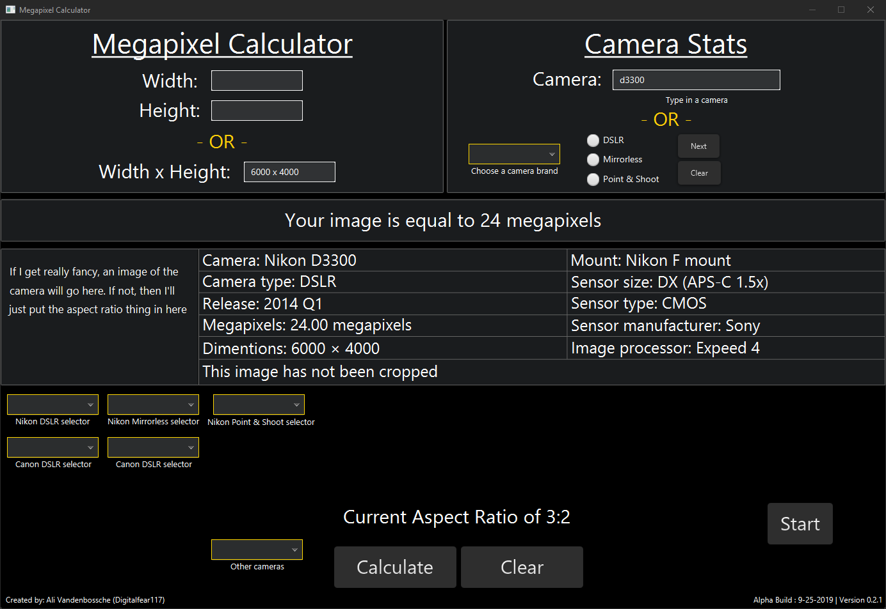
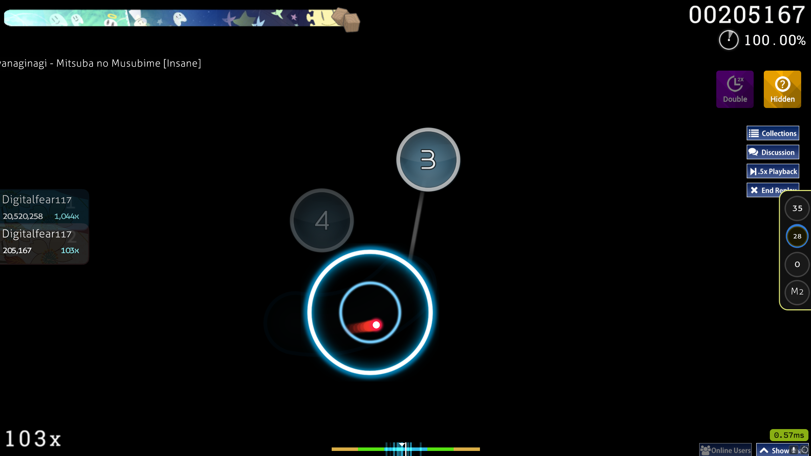

Hello, I am Ali Vandenbossche
I am a 24 year old programming student from Michigan attending OCC! I am currently working towards one day getting a software engineering degree. I have been programming since high school at the age of 16. I love computers, technology, and technology history. Outside of computers I love photography, and trying to capture the beauty of the world.
I previously have worked as a 2nd party employee for Nikon through Best Buy selling camera gear in order to help pay for college. Now I am a full time student working hard towards my degree!
My Links:
I'm going to be honest, I'm just not much of a traditional social media guy, I've tried some in the past, and I just don't care much for them. If you want to contact me, your best bet is discord. Where I go by digitalfear117, as I do on most of my current social medias. I am not actually the first person to use this name, but if it's from 2015 to now it's probably me.
Arguably the place I will probably end up that will have some value would by my github! Seems that it only becomes more and more important to use a git like service as time goes on.
The only other social media accounts of mine that I didn't instantly abandon would be like my my Flickr account, because I love photography! I don't post as much as I should, but I do like some of the things I have posted there over the years, maybe one day. I'm not a super big reddit user, but I check it once a month at most so I'll link it too.
If I have free time you will find me on my favorite game osu! I've played for the past 9 years and I'm probably not going anywhere anytime soon. Here is my osu! profile..
My Journey to Become a Software Engineer
It has been my goal for a while to become a software engineer! The current goal I'm working towards is getting the certificate for software engineering that is now being offered here, and then working on my MTA to go to Oakland University.

In high school at some point I had to make a presentation about what career I wanted pursue in life, and I of course made it about software engineering! I still have the presentation up on my OneDrive so that's quite epic, but I had to upload a new copy of it as it turns out OneDrive has a bug with pptm files that causes the webpage to crash infinitely. So here a link to a reuploaded pptx formatted version if you want to see it for some reason.
Current Classes
Here is a collection of the current classes I am taking for my Software Engineering certificate at OCC, with a small showcase of the things I have done in those classes.

Hey, that's this class! This website here is to show off the things we learned from this class and apply them to making an HTML web page!
Like how the site looks here in this screenshot with dark mode enabled? Try enabling it from within the settings dropdown!

One of the latter assignements of the class, this is a CAD drawing of a home built from measurements. I think building homes is rather fun and relaxing!
Previous Classes
Here is a collection of the previous classes I have taken that were programming related, and the things we did with them.
Software Engineering

Preview of an HTML page my group and I made to view stock market prices and values. This class was interesting because you had to work in a group of people, make a design and execute it. A server running a slightly older build of the site is actually still up and available to see. The Github repository can be found here
Object-Oriented Program (Java)

This was the final assignment of this class, a recreation of the board game Yahtzee. I am really proud of how this one came out. You can download and try the game here.
Data Structures (Transact-SQL)

This class taught us how to use Transact-SQL. I had only ever used MySQL before, and I actually found this to be confusing at times since it can be so different my MySQL. However in the end I was creating some crazy stuff like this. The point of this assignment was to write the requirements for a query, then to provide the answer that would go along with it. I made this abomination :D
System Analysis & Design (UML) & Networking Concepts
No screenshot for these two classes, as most of this was just test based learning, and virtual based learning.
I don't have much work to show for these classes, but here I got to learn about UML design practices, and how to avoid issues when designing software for clients and within groups or large teams. Networking concepts goes over a large selection of IT knowledge, how to do remote software, creating virtual machines, cable and networking equipment specifications you name it. Not exciting but very necessary.
Visual Basic

This was a class I took in high school, where we used Visual Basic to write basic programs. This is a look at my final assignment, which was a recreation of the card game Blackjack. Although I don't feel this language isn't all that necessary in the modern era, I did quite enjoy it's simplicity and IDE at the time. You can download my Blackjack game here.
Quick Basic
I couldn't find any screenshots of the work I did in this class :(
The very first programming class I ever took in high school, and it was qBASIC, yes qBASIC. I have no idea why they chose this as the first language for student to learn, it's so antiquated it's absurd! But I had a good time despite the absurdity of it. I remember the final assignment being a project where you had to make a storefront where you display the items that user could purchase. The user then could choose which items to purchase, total up the price with tax. I remember going way above and beyond and incorpating images into the program for some reason. I always liked pushing myself to the limits on these assignments even then lol.
Previous Classes
Here is a list of all the previous courses I have taken!
Completed Courses
| Class Name |
Field |
Year |
Credits |
| Composition I |
English |
2018 |
3 |
| Intro to Programming (Java) |
Computer Science |
2018 |
4 |
| Composition II |
English |
2019 |
3 |
| Intermediate Algebra |
Mathematics |
2019 |
4 |
| Introduction to Film |
Humanities |
2020 |
3 |
| College Algebra |
Mathematics |
2021 |
4 |
| World Civilization to Beginning of Modern Era |
History |
2021 |
4 |
| World Civilization From Modern Era |
History |
2022 |
4 |
| Object-Oriented Program (Java) |
Computer Science |
2022 |
4 |
| Beginning Japanese I |
Language |
2022 |
4 |
| Intro to Database Systems |
Computer Science |
2022 |
4 |
| System Analysis & Design (UML) |
Computer Science |
2023 |
4 |
| Introductory Chemistry |
Science |
2023 |
4 |
| Networking Concepts |
Computer Science |
2023 |
4 |
| Data Structures |
Computer Science |
2023 |
4 |
| Software Engineering |
Computer Science |
2023 |
3 |
Programming In My Spare Time

I sometimes write code in my spare time! Usually it's really simple scripts for doing things related to my other hobbies, but one of my larger projects was this Megapixel Calculator program I worked on in 2019 through 2021!
Unfortunately I cannot get this project to run anymore, as I had used the bundled version of jdk with a super old version of netbeans, now that version is no longer around, and when I run it with a new jdk, it complains that it is unsigned. When I run it in modern netbeans it throws these ambigious errors at me that don't seem possible unless the jdk isn't installed correctly. I cannot for the life of me imagine why all this hassle was added... I guess I just won't ever use JavaFX again. If after 4 hours I can't get it running again, maybe I'm better off writing this in another language. Here is the original files if you want to take a look at them, or try to get them working again.
Inside that download is a folder called "! backup 12-19-2019", inside of that is a "dist" folder that contains he "Megapixel Calculator.jar" file. In order to run it you must be using JDK 8 update 11. Since it's not signed it will not run on any modern version of java 8. You can download that java jdk version, but it's old and a security risk, so maybe run this in a VM. The newer build of my program refuses to launch even on that jdk version, I have to assume it was compiled with errors or something.
Screenshot is unfortunately an older version, but even just finding this screenshot took forever!
Photography
I love photography, and the only thing I love more than capturing photos, is doing so with odd and unusual old cameras. I used to sell camera gear, as I used to be a 2nd party employee to Nikon, as they paid Best Buy to have a Nikon position at their store. Nikon is definitely my favorite camera company, but I own gear from nearly every camera company, and I am knowledgeable on most DSLR and MILC cameras :D
Video Games

My most played game by far is osu! a circle clicking rhythm game. I have been playing since 2015, and many many of my current friends are current or former players. When I am not playing osu! I can sometimes be found playing Minecraft, Guitar Hero, Halo or Call of Duty. I have also played a lot of Apex Legends, but now that hackers have taken over, I don't feel that compelled to play, unfortunate because it's a good game. I am a proud $0 spender in free to play games lol
Other Media
Anime
I used to watch a lot of anime, as seen here on my anime list, but I don't really anymore. Not that I've stopped enjoying, but I've stopped watching anything outside of YouTube while I'm eating food.
As for my all-time favorite anime, here is my list!
Other shows I love dearly include:
I prefer to enjoy more active media today, like video games. The currently watching is a lie, but everything else is true lol. The reason being is I added some shows so I get some banger songs in animemusicquiz when I play that game.
I still enjoy doing stuff related to anime, here is me taking a picture with some Metal Gear Solid cosplayers at Youmacon 2023. I also play on animemusicquiz.com on occasion.